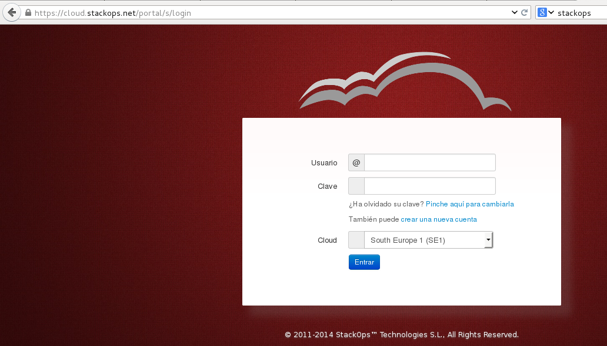
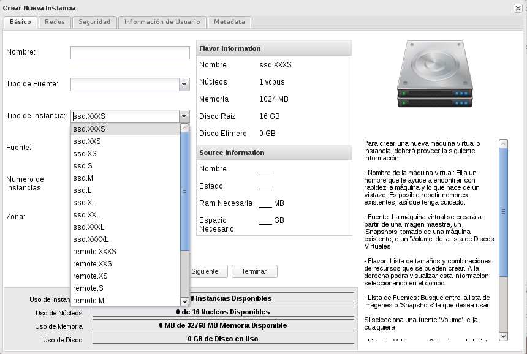

Conceptos previos (1)
- Imagen: Imagen de sistema preconfigurado que se utiliza como base para crear instancias. Dentro del cloud podemos encontrar diferentes imágenes para cada tipo de instacia que se quiera utilizar.
- Instancia (servidor): Clon de una imagen que se crea a demanda del usuario en uno de los nodos del cloud.
- Un sabor o flavor (Tipo de instancia) define para una instancia el número de CPUs virtuales, la RAM, si dispone o no de discos efímeros, etc.
Conceptos previos (2)
- IP fija: Dirección IP con la que se crean las instancias y que se utiliza para comunicación interna.
- IP flotante (IP pública): Dirección IP que puede asociarse a diferentes instancias con el fin de acceder a ellas desde fuera.
- Grupo de seguridad (Cortafuegos): Reglas de cortafuegos (iptables) que controlan el acceso a las instancias mediante la dirección IP flotante.
- Par de claves ssh (llaves): Utilizadas para acceder por ssh a las instancias desde fuera del cloud
Introducción a StackOps Portal
- El panel de control web (dashboard) de OpenStack por defecto se llama Horizon
- La empresa StackOps nos ofrece un cloud ṕúblico que actualmente trabaja con OpenStack Icehouse
- La herramienta de gestion de la plataforma se llama StackOps Portal. Esta aplicación web se encuentra disponible en la url https://cloud.stackops.net
- Implementa las funcionalidades básicas de los componentes principales de OpenStack: Nova, Glance, Neutron, Cinder, etc.
Acceso a StackOps Portal
- Acceso mediante usuario/contraseña
- A día de hoy puede acceder a la zona Sur de Europa.
- Un usuario puede gestionar múltiples Virtual Datacenters, pero lo normal es que un usuario solo tenga un tenant o Virtual Datacenter que gestionar.
- Un usuario puede:
-
- Crear instancias
- Modificar el estado de sus instancias
- Adquirir direcciones IP flotantes
- Asociar direcciones IP píblicas a sus instancias
- Crear y editar reglas de acceso a sus instancias mediante los Grupos de Seguridad
- Crear pares de clave ssh y asociarlas a instancias
- ...
Acceso a StackOps Portal

Acceso a StackOps Portal

Creación de una instancia
Elegir la imagen que vamos a instanciar

Elegir el sabor que va a tener la instancia

Asignar el grupo de seguridad con el que va a trabajar la instancia

Elegir la clave RSA que nos va a posibilitar el acceso a la instancia

Elegir la red interna (o redes) a la que va a estar conectada la instancia

Lanzar instancias (1)

Lanzar instancias(2)

Asociar IP Flotante a la instancia
- Las direcciones IP asignadas se denominan
fijas porque no varían durante la vida de la
instancia.
- Las direcciones IP flotantes se denominan
así porque se pueden asociar a diferentes
instancias en cada momento, por lo que pueden
"flotar" de una a otra
- Las direcciones IP flotantes en el caso de un cloud público son direcciones IP públicas y se utilizan
para acceder a un equipo del cloud desde "fuera".
- En "Administrador de Seguridad" vamos a la sección
"IP Públicas" y asignamos una IP al
proyecto.
- Seleccionamos la dirección IP flotante (Pública) y la
asociamos a una de las instancias lanzadas.
IP flotantes

Acceso a la instancia

Acciones que podemos relaizar sobre las intancias

Trabajndo con instantaneas (snapshots)
- En cualquier momento puedo crear una instantanea de una instancia, con lo que se creará una nueva imagen con el estado actual de la instancia.
- Puedo crear una nueva instancia a partir del snapshot.
- StackOps también nos ofrece la opción de Backup que nos permite programa la creación de snapshots cada cierto tiempo.
Demostración
- Trabajar con imagen e instancia Cirros
- Crear una instancia a partir de la imagen Debian (Asinar IP flotante, acceso a la instancia)
- Trabajar con SnapShots/Backup
- Introudcción a las herramientas espécificas de StackOps Portal